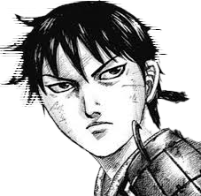
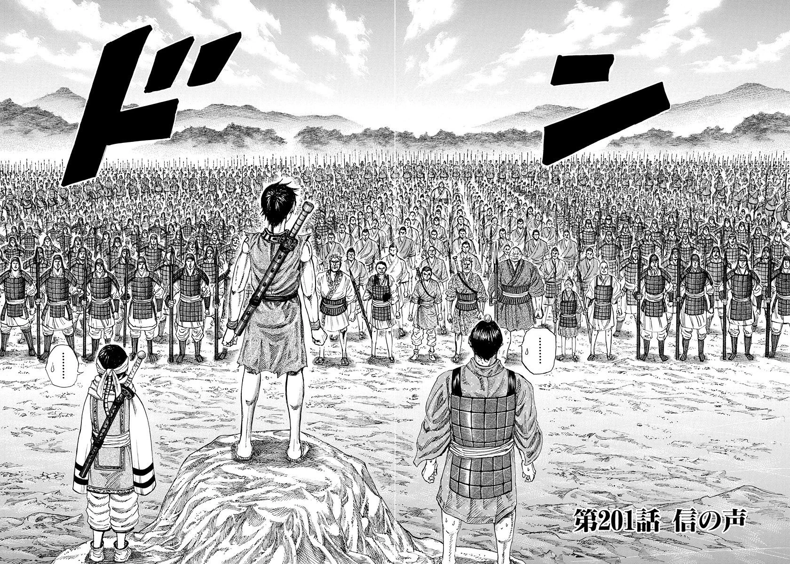

The Dream of a War Orphan
 In the chaotic era of China's Warring States, a young war orphan named Shin held one dream to become the Greatest General Under the Heavens. Together with his sworn brother Hyou, Shin trained every day in the village, their wooden swords clashing with the hopes of rising beyond their lowly status.
Fate would take a tragic turn, setting Shin on a path that would change history. His journey would be filled with bloodshed, brotherhood, strategy, and sacrifice.
About the Kingdom of Qin
Shin's destiny becomes intertwined with that of Ei Sei (later Qin Shi Huang), the young king of Qin. Together, they face political strife, assassinations, and massive wars all while aiming to unify China under one rule.
Shin earns his place among the mighty by proving himself in brutal campaigns such as the Battle of Dakan Plains and the Coalition Army war. His growth from a lowly servant to a 1,000-man commander inspires all.
They key virtues that define Shin:
- Unbreakable Will
- Leadership Through Action
- Unshakable Loyalty to Comrades
you can learn more about shin at the Kingdom Wiki
Why Shin's Journey Matters?
The story of Shin is not just about war — it's about human potential and the bonds we forge in pursuit of greatness. His legacy teaches us:
- To fight for your dreams, no matter your status
- That true strength comes from protecting others
- To lead with courage, not fear
- That every great leader starts as a nobody
- To rise, again and again, even after defeat 🛡️
Shin's legend continues. Until the day he stands as a Great General under the heavens!